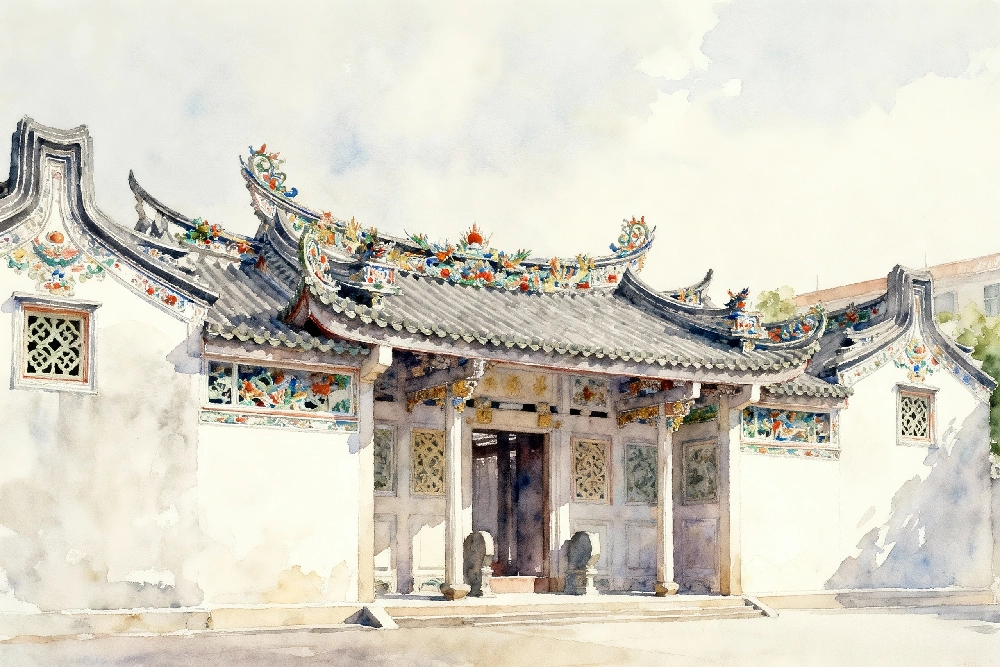
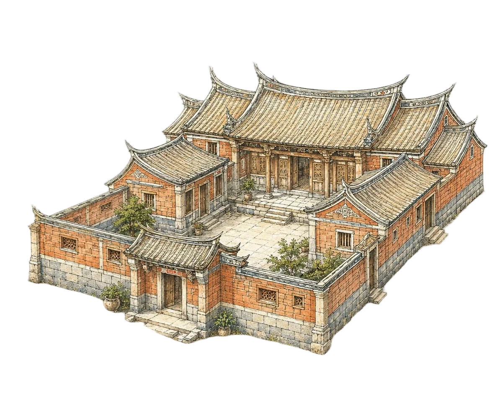
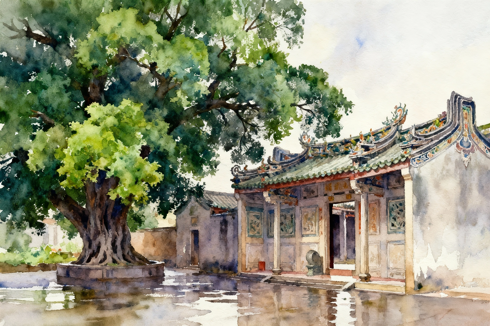

Digital Cultural Exhibition
Minnan Cuò闽南厝Traditional Dwellings of Southern Fujian
Follow red brick, pale stone, swallowtail ridges, and Five-Element Gables （五行山墙） to read the memory, craft, and coastal beauty of Minnan domestic architecture （闽南民居）.

A House of Life
What is Cuò? 厝
In the Minnan context （闽南） Cuò （厝） means more than a house. It is a family dwelling, a ritual setting, a neighborhood interface, and a container of migration memories.

Cuò
A Cuò （厝） is often organized by an axis, forecourt, main hall, side wings, and enclosing walls. Warm red brick, pale stone, and flowing rooflines create a spatial language that gathers inward while extending outward.
Place and Time
Historical Context
Minnan dwellings grew between mountains and sea. They combine ritual order, maritime exchange, overseas hometown culture, and local craftsmanship into a distinct regional architecture.
Architectural Observation
Key Features of Minnan Dwellings（闽南民居）
From spatial layout to roof details, the Minnan Cuò （闽南厝） responds to lineage order as well as a humid, rainy, typhoon-prone coastal environment.

Roof Silhouettes
The Beauty of Gables
Gables shape the side profile of the roof. In this page, the learning happens inside the quiz: each answer reveals the silhouette logic of Five-Element Gables （五行山墙）.
Go Straight to Practice
Learn by choosing, correcting, and comparing.
The quiz gives you one retry after a wrong answer. A second wrong answer reveals the correct type and its visual clue.
Start Five QuestionsObservation Guide
Before the Quiz
Look at the whole building first, then the ridge, then the gable silhouette.
Interactive Quiz
Identify the Five-Element Gable（五行山墙）
Observe the gable outline and choose the closest type. You may try once more after the first wrong answer.